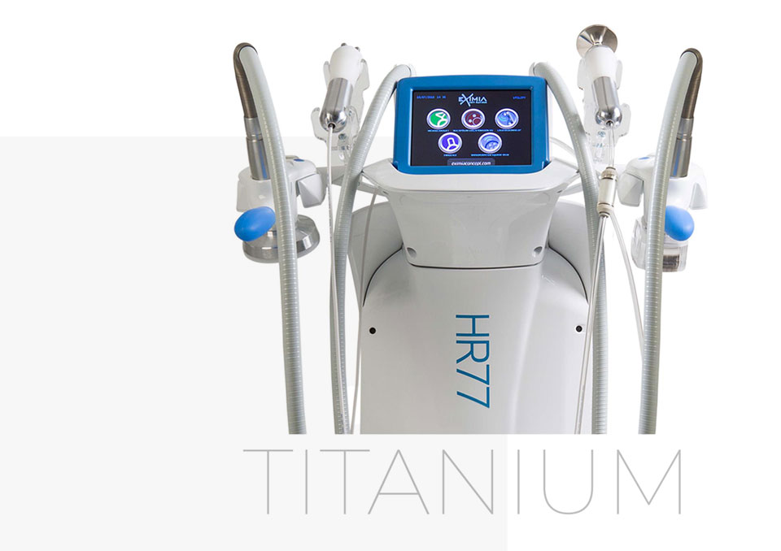
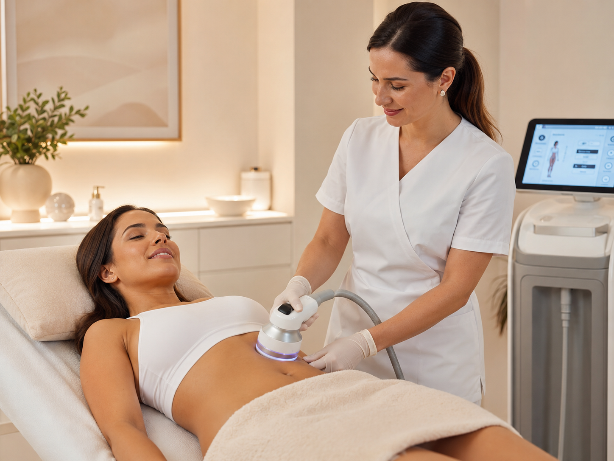
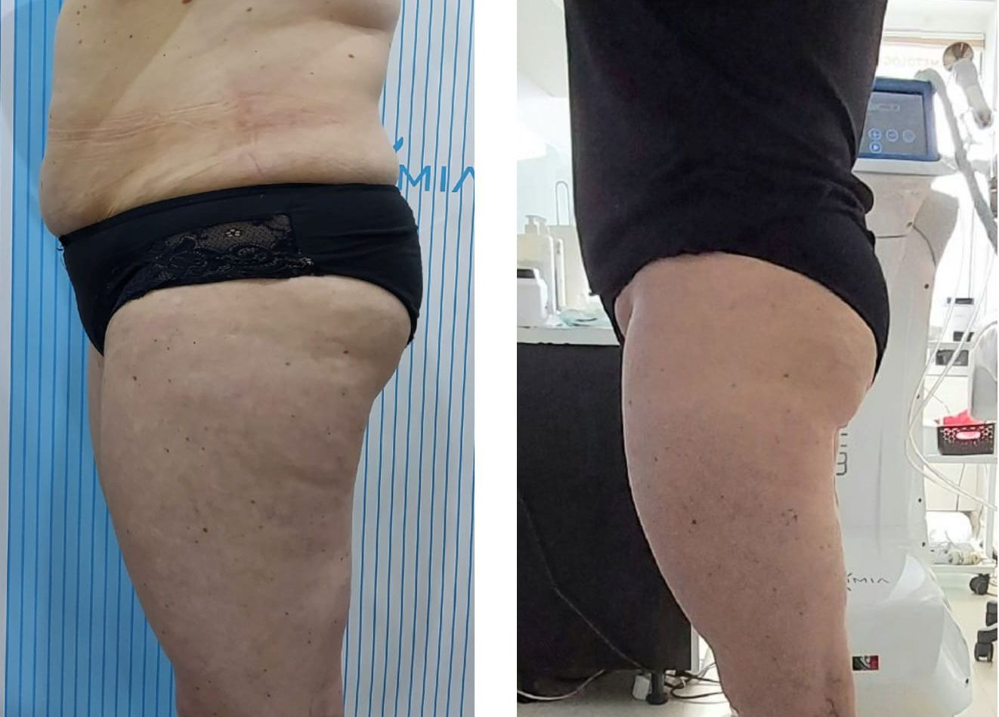
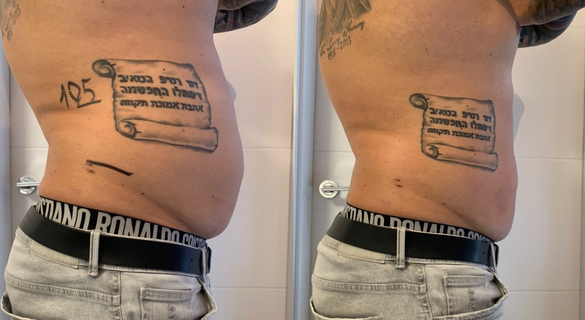

1
Microdermolift
Pierwsza faza przygotowuje naskórek do dalszej terapii. Delikatnie złuszcza, wygładza i dotlenia skórę oraz wspiera jej przygotowanie do kolejnego etapu.
Zaawansowana technologia modelowania sylwetki, redukcji cellulitu i ujędrniania skóry podczas jednej kompleksowej terapii.
599 zł cena standardowa 900 zł
Oszczędność czasu i wygoda.
Komfortowy i nieinwazyjny zabieg.
Sylwetka, cellulit i ujędrnienie.
Jedna terapia łączy kilka uzupełniających się etapów, dzięki czemu nie musisz korzystać z wielu osobnych zabiegów.
Działanie na wybrane partie ciała.
Wsparcie usuwania nadmiaru płynów.
Gładszy i bardziej jednolity wygląd skóry.
Poprawa napięcia i elastyczności.
Kompleksowa praca nad proporcjami.

Zaawansowana platforma łącząca kilka uzupełniających się technologii do modelowania sylwetki, redukcji cellulitu i terapii anti-aging.
Kongres Medycyny Anti-Aging w Bukareszcie
I miejsce w kategorii najlepszego sprzętu do modelowania sylwetki.
Konferencja dermatologii i medycyny estetycznej w Dubaju
Nagroda AIDA za innowacyjne podejście do terapii cellulitu.
Termalia Award w Genewie
I miejsce w kategorii wskazanej przez producenta.
Zabieg EXIMIA TITANIUM, dzięki medycznie opracowanym protokołom, przebiega zawsze kilkuetapowo.
Pierwsza faza przygotowuje naskórek do dalszej terapii. Delikatnie złuszcza, wygładza i dotlenia skórę oraz wspiera jej przygotowanie do kolejnego etapu.
Etap wzmacnia efekt eksfoliacji mechanicznej przy użyciu specjalnie opracowanego preparatu enzymatycznego i przygotowuje skórę do dalszego działania.
Połączenie laseroterapii i elektroporacji. Terapeuta dobiera preparat do celu terapii, na przykład do modelowania sylwetki, poprawy napięcia lub odżywienia skóry.
Zaawansowana głowica łączy fale radiowe, pole magnetyczne i masaż endodermalny. Etap pracuje nad tkanką tłuszczową, cellulitem i napięciem skóry.
Końcowa faza wspiera odbudowę warstwy hydrolipidowej, lifting i ujędrnienie. Zamyka terapię, skupiając się na regeneracji i poprawie kondycji skóry.
Zakres rezultatów zależy od indywidualnych uwarunkowań, obszaru terapii i liczby wykonanych zabiegów.

Zobacz przykładowe rezultaty modelowania sylwetki i poprawy jakości skóry. Zdjęcia prezentują wybrane obszary zabiegowe i pokazują, jak terapia może wspierać redukcję cellulitu oraz poprawę konturu ciała.

Przykładowy efekt terapii w obszarze ud i bioder. Widoczna poprawa gładkości skóry oraz lepszy kontur sylwetki.

Przykładowy rezultat terapii w okolicy brzucha. Celem zabiegów jest wsparcie redukcji miejscowych nagromadzeń tkanki tłuszczowej i poprawy linii sylwetki.
Każdy organizm reaguje indywidualnie, dlatego zakres i tempo efektów zależą od obszaru zabiegowego, liczby sesji oraz wyjściowej kondycji tkanek.
Dobierzemy obszar zabiegowy oraz indywidualny plan terapii.
Adres: Duńska 27, Szczecin
Gabinet Eximia w Szczecinie oferuje zabiegi modelowania sylwetki, redukcji cellulitu, ujędrniania skóry oraz terapii anti-aging. Zapraszamy na konsultację przy ul. Duńskiej 27 w Szczecinie.
Telefon: +48 791 576 186
Adres:
Zabiegi Eximia Titanium w Szczecinie, określane także jako zabiegi na odchudzanie i modelowanie sylwetki, wspierają redukcję cellulitu, poprawę napięcia skóry, modelowanie brzucha, talii, ud i pośladków oraz kompleksową terapię anti-aging. Każdy plan zabiegowy dobierany jest indywidualnie podczas konsultacji.